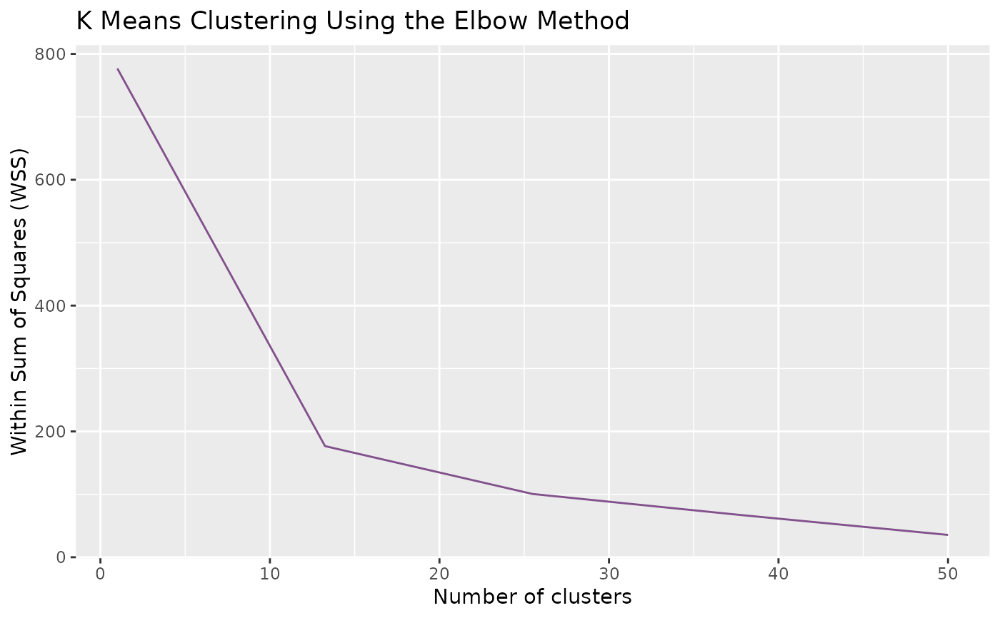

Generate clusters
gClusters.RdgClusters() returns the clusters generated by k-means and yield
an elbow plot as a way of finding the optimal parameter.
Arguments
- data
A data frame. See also
pre_process().- ncluster
A number of clusters.
- elbow.max
A number of the maximum value of x-axis. It should be larger than the expected
nclusterand smaller than the sample size.- iter.max
A number of the maximum iterations allowed in k-means.
- nstart
A number of random attempts of generating initial configurations. The k-means algorithm will choose the best one among these attempts. For larger data, 'nstart' can be set lower or just set to 1.
Details
To determine the optimal number of clusters (ncluster), it is advised to closely examine the elbow plot and identify the point on the graph where a substantial change or 'elbow' occurs. This is often indicative of the most suitable cluster count.
In cases where your dataset is extensive or intricate, you might consider increasing the value of elbow.max to ensure a more comprehensive exploration of potential cluster counts. This can help in achieving more accurate and meaningful results, especially when working with larger or more complex datasets.""This function can be executed with only the data parameter at the outset. However, to achieve the best clustering results, further adjustments are recommended. After the initial run, users are expected to adjust the function's parameters based on the clustering outcomes and the elbow plot analysis.
Examples
data(test_data)
reslist <- gClusters(test_data_processed)
# k-means result
reslist[[1]]
#> K-means clustering with 20 clusters of sizes 3, 5, 4, 4, 3, 3, 9, 2, 3, 2, 15, 1, 6, 8, 5, 10, 8, 3, 3, 3
#>
#> Cluster means:
#> T1 T2 T3 T4 T5 T6
#> 1 0.8451027 -0.91677497 -0.9167750 -0.9167750 -0.07155756 1.4508853
#> 2 2.0274054 -0.26627082 -0.4758661 -0.5359865 -0.53598651 1.6800454
#> 3 0.3381410 1.48152270 0.4341443 0.7473132 0.81078269 -0.5234016
#> 4 1.1220511 0.09185659 -0.8981599 -0.7233153 -0.57179240 -0.8603755
#> 5 0.7135246 -0.07816295 -0.6653832 -0.9316950 -0.93169499 1.7843263
#> 6 1.1984874 -0.53770079 -0.9894547 0.3514487 0.35144872 1.6923522
#> 7 2.3457831 -0.05646618 -0.6692552 -0.3111878 -0.57046065 -0.6594499
#> 8 -0.2784769 -0.82258408 -0.8225841 -0.8225841 1.23387613 -0.8225841
#> 9 1.3163135 -0.76059916 -0.7605992 1.5193444 0.60060578 0.8438579
#> 10 2.1235865 1.05868538 -0.3946761 0.1315587 -0.13155870 0.3946761
#> 11 -0.4559536 -0.54739040 -0.1516892 1.3069783 2.11962189 -0.3744833
#> 12 0.6210590 -0.41403934 -0.4140393 -1.4491377 -1.44913767 0.6210590
#> 13 2.6143064 -0.26768139 -0.4101608 -0.5088879 -0.59164849 0.2981041
#> 14 1.1732809 -0.40273562 0.4305472 0.8475740 1.09367739 -1.1491983
#> 15 0.6543174 -0.06991189 0.3272412 0.2386101 1.16034375 1.4951461
#> 16 -0.1902008 -0.69654961 -0.6683695 -0.4657663 -0.38514865 -0.5590421
#> 17 0.1155971 -0.19000668 -0.2562979 -0.1487697 -0.43833477 2.5830148
#> 18 0.2699801 -0.08094677 -0.2892631 -0.7813127 -0.60650512 -0.1494523
#> 19 -0.1777849 -0.91097042 -0.7478884 -0.5848064 -0.74788840 1.5914950
#> 20 0.7929565 -0.20290322 1.7386516 -0.3583178 0.05065238 -0.3804695
#> T7 T8 T9 T10
#> 1 1.179722199 0.302776594 -0.342720631 -0.6138837
#> 2 -0.479791361 -0.535986509 -0.438781474 -0.4387815
#> 3 -1.000948275 -0.369116018 -0.959219004 -0.9592190
#> 4 -0.822591022 0.091471523 1.009082834 1.5617720
#> 5 0.972588451 -0.931694991 -0.112709180 0.1809009
#> 6 -0.043835990 -0.537700788 -0.989454740 -0.4955899
#> 7 -0.548492772 0.074188677 0.007170609 0.3881701
#> 8 -0.822584085 1.233876127 1.233876127 0.6897689
#> 9 -0.666108041 -0.666108041 -0.666108041 -0.7605992
#> 10 -0.795567972 -0.795567972 -0.795567972 -0.7955680
#> 11 -0.582760730 -0.597608290 -0.301127609 -0.4155871
#> 12 0.621059003 -0.414039336 1.656157342 0.6210590
#> 13 -0.030674309 -0.425670066 -0.254423130 -0.4232644
#> 14 -1.154169196 -0.399999721 -0.316286033 -0.1226905
#> 15 -0.892735465 -0.964398012 -0.912552514 -1.0360606
#> 16 -0.566522777 0.002653353 1.739179823 1.7897666
#> 17 -0.006327004 -0.327677972 -0.665598891 -0.6655989
#> 18 -0.763902351 -0.412975440 0.392204548 2.4221731
#> 19 -0.582861437 0.071411579 1.044646683 1.0446467
#> 20 -1.130001195 -0.012248084 0.050652377 -0.5489730
#>
#> Clustering vector:
#> 1 2 3 4 5 6 7 8 9 10 11 12 13 14 15 16 17 18 19 20
#> 16 13 8 3 15 16 1 10 11 11 14 18 4 7 14 11 17 16 20 7
#> 21 22 23 24 25 26 27 28 29 30 31 32 33 34 35 36 37 38 39 40
#> 6 16 17 2 13 11 9 7 17 11 1 11 3 8 11 15 14 4 16 3
#> 41 42 43 44 45 46 47 48 49 50 51 52 53 54 55 56 57 58 59 60
#> 17 2 16 16 6 16 17 15 2 17 7 13 5 4 17 1 5 11 7 11
#> 61 62 63 64 65 66 67 68 69 70 71 72 73 74 75 76 77 78 79 80
#> 14 15 9 4 20 2 13 6 20 14 18 11 17 10 18 11 3 11 14 9
#> 81 82 83 84 85 86 87 88 89 90 91 92 93 94 95 96 97 98 99 100
#> 14 19 7 19 19 2 14 13 12 7 11 5 11 7 16 15 11 13 16 7
#>
#> Within cluster sum of squares by cluster:
#> [1] 5.0293650 1.4631167 8.1365152 4.7723673 3.7880838 5.0061693
#> [7] 15.5879788 0.9921913 2.4583646 0.9833964 17.5214611 0.0000000
#> [13] 4.8096965 19.4678433 5.9394323 8.0515257 8.0412334 3.1842269
#> [19] 4.8527883 10.3513106
#> (between_SS / total_SS = 83.2 %)
#>
#> Available components:
#>
#> [1] "cluster" "centers" "totss" "withinss" "tot.withinss"
#> [6] "betweenss" "size" "iter" "ifault"
# elbow plot
reslist[[2]]
